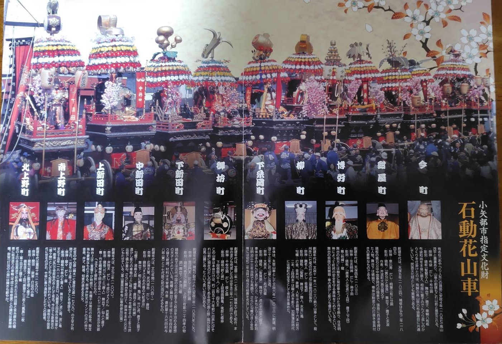

小矢部市指定文化財 アーカイブ
富山県小矢部市の石動地区で毎年4月29日（昭和の日）に開催される伝統的な祭礼です。豪華絢爛な11基の「花山車」が市街地を巡行し、江戸時代から続く商都・石動の繁栄を今に伝えています。

画像をタップすると細部までご覧いただけます
明治21年（1888年）の「小矢部の大火」では多くの建物が失われましたが、南上野町の山車（寛政10年・1798年創設）は奇跡的に焼失を免れました。石動の不屈の精神を象徴する、歴史的に極めて貴重な山車です。
※表は左右にスライドして確認できます
| 町内名 | 御神体 | 創設・特徴 |
|---|---|---|
| 今町 | 寿老人 | 天正11年(1583)。石動最古の歴史を誇る。 |
| 紺屋町 | 恵比須 | 天保年間。舞台前方の彫刻に特徴。 |
| 博労町 | 福禄寿 | 天保3年(1832)。二層構造の舞台。 |
| 柳町 | 大黒天 | 文化11年(1814)。氷見で製作された精巧な山車。 |
| 下新町 | 布袋和尚 | 文化6年(1809)。漆塗と螺鈿細工が美しい。 |
| 御坊町 | 飾太鼓 | 享保17年(1732)。250年以上前の姿を伝える。 |
| 下新田町 | 武内宿禰 | 安政2年(1855)。欅材の特選彫刻が見どころ。 |
| 中新田町 | 関羽 | 文化年間。金粉・朱塗りの豪華な仕上げ。 |
| 上新田町 | 源義経 | 文化3年(1806)。源義経・弁慶・静御前の三体を祀る。 |
| 南上野町 | 神功皇后 | 寛政10年(1798)。大火を免れた「竹林に虎」の彫刻。 |
| 北上野町 | 鍾馗 | 安永7年(1778)。最も古い形式を伝える山車の一つ。 |
井波彫刻や氷見彫刻の名工たちが手掛けた精緻な彫刻が施されています。龍や鳳凰などの瑞獣が、金粉、朱塗り、漆塗り、螺鈿細工などで彩られ、豪華絢爛な美しさを放っています。